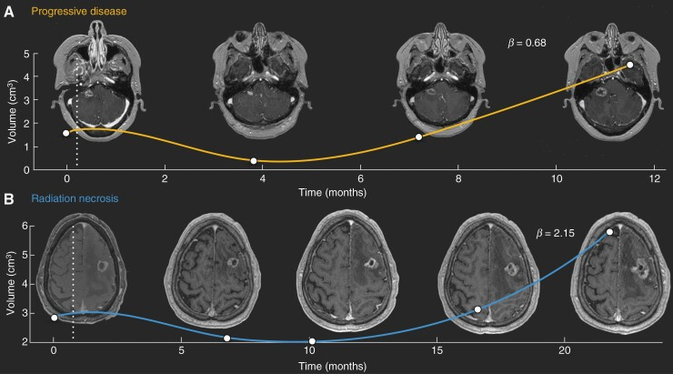
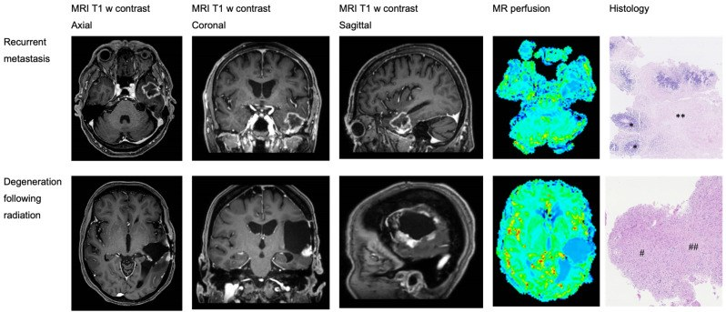
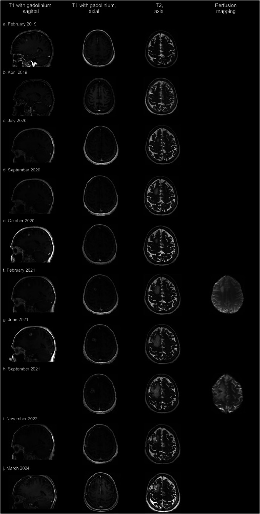

204 — Hoại tử phóng xạ sau xạ trị u não và "vòng xoáy" tái phát giả / Radiation necrosis vs tumour recurrence after brain radiotherapy
Tags: pattern:hoai-tu-phong-xa pattern:ngam-vong pattern:phu-chat-trang vung:nao score:RANO-BM score:lesion-quotient protocol:MRI-DSC-MRS protocol:PET-MET-FET
Mức chắc chắn (certainty): tổng hợp y văn (literature synthesis) — số liệu từ tổng quan so sánh đa phương thức (Arif S et al., Cureus 2025, PMC11890348), đoàn hệ 101 di căn não (Ocaña-Tienda B et al., Neuro-Oncol Adv 2023, PMC9887079), 32 ca có mô bệnh (Schack A et al., Brain Sci 2024, PMC11048647), 94 ca điều trị phù não do hoại tử phóng xạ (Dijkstra ME et al., Neuro-Oncol Adv 2026, PMC13197578) và một ca nguyên văn theo dõi 60 tháng (Ahmed M et al., Adv Radiat Oncol 2024, PMC11491898).
1. Tổng quan bệnh học – cơ chế hình ảnh: vì sao "vòng ngấm" không đồng nghĩa "u sống"
- Định nghĩa: hoại tử phóng xạ (radiation necrosis — RN) là tổn thương mô não do xạ trị, xuất hiện 6–24 tháng sau xạ phẫu (SRS/fSRS) hoặc xạ trị phân liều, đôi khi tới nhiều năm. Tần suất 5–10% sau SRS/fSRS điều trị di căn não (PMC11491898) và 5–25% nếu tính cả xạ trị phân liều cho u nguyên phát (PMC11890348).
- Chuỗi bệnh học (TẠI SAO có hình ảnh đó):
- Tổn thương nội mô mạch → huyết khối fibrin, hoại tử dạng tơ huyết (fibrinoid necrosis) thành mạch.
- Thiếu máu cục bộ + thiếu oxy → hoại tử lan tỏa, mất myelin, tăng sinh tế bào hình sao.
- Tăng VEGF → tăng tính thấm hàng rào máu–não → phù chất trắng và ngấm gadolinium. Đây là lý do corticoid và bevacizumab (kháng VEGF) làm giảm phù nhanh, dù không "chữa" mô hoại tử.
- TẠI SAO từng chuỗi xung cho tín hiệu khác nhau — vật lý cần nhớ:
- T2/FLAIR: mô hoại tử nhiều nước tự do → sáng; phù chất trắng lan "ngón tay" theo bó sợi, không tôn trọng ranh giới chất xám (khác u xâm lấn).
- T1W sau gadolinium: hàng rào máu–não vỡ → ngấm; RN hay có ngấm dạng vòng mỏng, đều, viền trong nhẵn, trong khi tái phát thường nốt đặc, dày không đều, lệch tâm — nhưng chồng lấp rất lớn.
- DWI/ADC: trung tâm hoại tử khuếch tán tự do (ADC cao); u đặc tế bào dày ADC thấp. Cạm bẫy: viền mô hạt của RN cũng có thể hạn chế khuếch tán.
- DSC-MRI (rCBV): RN không có mạng mao mạch sống → rCBV thấp; tái phát có tân mạch → rCBV cao. Đây là nguyên lý mạnh nhất trong thực hành.
- MRS: RN Cho thấp, NAA giảm, có đỉnh lipid–lactate (hoại tử yếm khí); tái phát Cho cao (tăng tổng hợp màng tế bào), Cho/NAA và Cho/Cr tăng.
- PET acid amin (MET/FET): u hấp thu acid amin mạnh, mô hoại tử thì không → phân biệt tốt hơn FDG (vỏ não hấp thu FDG rất mạnh, dễ nhiễu).
- TẠI SAO "đọc phim thường" hay sai: cả hai đều ngấm thuốc + phù + tăng thể tích. Ba dấu "kinh điển" của RN là "soap bubble", "Swiss cheese", "cut green pepper" chỉ có giá trị dự báo dương 25% (PMC11890348) — tức 3/4 trường hợp "trông như RN" vẫn có thể là u.
- TẠI SAO thời điểm quan trọng: giả tiến triển (pseudoprogression) xuất hiện trong 12 tuần đầu sau xạ (do viêm cấp, hàng rào máu–não vỡ tạm thời) và tự thoái triển; RN thật thường sau 6 tháng. Cùng một hình ảnh, khác mốc thời gian → khác xử trí.
Ngưỡng định lượng trụ cột
| Chỉ số | Số liệu | Nguồn |
|---|---|---|
| Tần suất RN sau SRS/fSRS di căn não | 5–10% | PMC11491898 |
| Tần suất RN chung (xạ trị phân liều) | 5–25% (7% nếu chẩn đoán bằng mô bệnh; 24% nếu bằng hình ảnh) | PMC11890348 |
| RN ở u thần kinh đệm sống > 1 năm | 10–15% | PMC11890348 |
| Hoại tử thùy thái dương sau xạ vòm họng | 1,6–22% trong 9 tháng–16 năm; 5% trong 10 năm | PMC11890348 |
| Hóa trị đồng thời | tăng nguy cơ RN 5 lần | PMC11890348 |
| Liều–thể tích (HyTEC) | V12Gy < 5 mL nguy cơ thấp; tăng theo thể tích xạ | PMC11491898 |
| Lesion quotient (LQ) | < 0,3** → RN; **> 0,6 → tái phát; NPV 73% / 39% | PMC11890348 |
| Dấu "soap bubble/cut green pepper" | PPV 25% | PMC11890348 |
| MRI thường cho tái phát | Se 87,1%, Sp 30% | PMC11890348 |
| DSC-MRI | Se 90%, Sp 88% | PMC11890348 |
| MRS | Se 91%, Sp 95% | PMC11890348 |
| 11C-MET PET/CT | Se 94,7%, Sp 88,9% | PMC11890348 |
| 18F-FET PET | Se 91%, Sp 95% | PMC11890348 |
| Phối hợp nhiều phương thức | Se 96%, Sp 93% | PMC11890348 |
| Động học thể tích (β) | AUC 0,76 cho phân biệt RN/tái phát (101 tổn thương: 60 tái phát, 41 RN) | PMC9887079 |
2. Mẫu hình + chẩn đoán phân biệt theo mốc thời gian (Gamut)
- Mốc < 12 tuần sau xạ: giả tiến triển (pseudoprogression) — ngấm tăng, phù tăng rồi giảm dần không cần đổi điều trị; đặc biệt sau hóa–xạ đồng thời và sau ức chế điểm kiểm soát miễn dịch (iRANO).
- Mốc 6–24 tháng: RN (thể vòng, thể nốt, thể lan tỏa), tái phát tại chỗ, di căn mới ngoài trường xạ, áp-xe (hiếm), nhồi máu bán cấp trong trường xạ, viêm mạch phóng xạ.
- Mốc > 24 tháng: RN muộn (có thể tiến triển nhiều năm), u thứ phát do xạ (meningioma, sarcoma), giãn não thất do xạ, bệnh chất trắng phóng xạ lan tỏa.
- Theo hình thái:
- Vòng mỏng, viền trong nhẵn, trung tâm T2 rất sáng, không nốt đặc → RN.
- Nốt đặc lệch tâm, dày không đều, DWI sáng/ADC tối → tái phát.
- "Soap bubble" (bọt xà phòng), "Swiss cheese", "cut green pepper" → gợi RN nhưng PPV chỉ 25%.
- Giảm thể tích + teo + encephalomalacia → RN đã ổn định.
- Gợi nhớ 4T: Time (mốc 6–24 tháng), Topography (trong trường xạ, quanh ổ đã chiếu), Trait (vòng mỏng, bọt, không nốt đặc), Traces (rCBV thấp, Cho thấp, lipid–lactate cao, MET/FET thấp).
3. Bảng so sánh phân biệt (ma trận đối chiếu)

Trên (A, vàng): tái phát — thể tích giảm sau xạ rồi tăng đơn điệu, hệ số phát triển β = 0,68. Dưới (B, xanh): hoại tử phóng xạ — thể tích tăng nhanh rồi tự thoái triển, β = 2,15. Đường đứt nét = thời điểm SRS. Nguồn: Ocaña-Tienda B et al., Neuro-Oncol Adv 2023, PMC9887079 Fig. 1, CC BY 4.0.| Thực thể | Hình ảnh điển hình | Chốt vào (rule-in) | Chốt loại (rule-out) | Gợi ý xác nhận |
|---|---|---|---|---|
| Hoại tử phóng xạ (RN) | Vòng ngấm mỏng, đều, trung tâm T2 rất sáng, rCBV thấp, Cho thấp + lipid–lactate, MET/FET thấp, teo dần | Nằm trong trường xạ + mốc 6–24 tháng + rCBV thấp + giảm dần theo thời gian | Nốt đặc lệch tâm + DWI sáng/ADC tối + rCBV cao + Cho cao → không phải RN | DSC-MRI + MRS (± MET/FET), theo dõi 6–8 tuần |
| Tái phát tại chỗ | Nốt đặc, dày không đều, tăng thể tích liên tục, phù tăng, có thể xâm lấn màng não | Tăng ≥ 20% đường kính dài nhất (và ≥ 5 mm) + rCBV cao + Cho/NAA cao | Teo + giảm ngấm không điều trị → RN | Mô bệnh (sinh thiết/mổ) là chuẩn vàng |
| Giả tiến triển | Ngấm tăng trong 12 tuần quanh ổ xạ, phù tăng, lâm sàng ổn | Mốc < 12 tuần + tự giảm khi chụp lại 4–8 tuần | Tiếp tục tăng sau 12 tuần → không còn là giả tiến triển | Chụp lại 4–8 tuần; không đổi điều trị |
| Áp-xe trong trường xạ | Ổ dịch ngấm viền + hạn chế khuếch tán mạnh (ADC rất thấp), có thể có khí, sốt | Sốt + ADC rất thấp + cấy dương | ADC cao trung tâm + không sốt → RN/u | DWI/ADC + cấy + dẫn lưu |
| Nhồi máu bán cấp | Ngấm theo lãnh thổ mạch, hình chêm, vỏ não, ADC giảm sớm rồi tăng | Theo lãnh thổ + khởi phát đột ngột | Không theo lãnh thổ, hình cầu quanh ổ xạ → RN/u | DWI + MRA |
| U thứ phát do xạ | Meningioma/sarcoma ngoài trường xạ, xuất hiện > 5 năm, phát triển chậm | Thời gian tiềm tàng dài + tổn thương mới ngoài ổ xạ | Tổn thương trong ổ xạ, 6–24 tháng → RN/tái phát | MRI + mô bệnh |
| Bệnh chất trắng phóng xạ lan tỏa | T2/FLAIR đối xứng quanh não thất, không ngấm, không choán chỗ | Đối xứng + không ngấm + không hiệu ứng khối | Một ổ + ngấm + choán chỗ → RN/tái phát | MRI, loại trừ nguyên nhân khác |
Bảng độ chính xác của từng phương thức (dùng để chọn, không để chốt tuyệt đối)
| Phương thức | Se | Sp | Ghi chú thực hành |
|---|---|---|---|
| MRI thường (T1+Gd, T2) | 87,1% | 30% | Không đủ loại trừ; "vòng đẹp" vẫn có thể là u |
| DSC-MRI (rCBV) | 90% | 88% | Ưu tiên số 1 khi có máy và kỹ thuật ổn định |
| MRS (Cho/Cr, Cho/NAA) | 91% | 95% | Cần voxel đặt đúng, tránh vùng hoại tử/xương |
| 11C-MET PET/CT | 94,7% | 88,9% | Se cao nhất cho tái phát; ít trung tâm có |
| 18F-FET PET | 91% | 95% | Thay thế tốt cho MET |
| 18F-FDG PET | 81% | 72% | Kém ở não: vỏ não hấp thu mạnh |
| Phối hợp nhiều phương thức | 96% | 93% | Cách thực tế nhất khi một phương thức không rõ |

Hàng trên: di căn não tái phát (T1+Gd axial/coronal/sagittal) — bản đồ tưới máu rực màu (rCBV cao), mô bệnh có mô u () và hoại tử (**). Hàng dưới: thoái hóa sau xạ — tổn thương rỗng, ngấm viền, bản đồ tưới máu kém màu hơn, mô bệnh là mô thần kinh thoái hóa (#, ##). Nguồn: Schack A et al., Brain Sci 2024, PMC11048647 Fig. 2, CC BY 4.0.*
4. Protocol chụp + xử trí & theo dõi
4.1 Protocol MRI (bắt buộc đủ bộ, không chỉ "MRI sọ có cản quang")
- Máy: 1,5 T tối thiểu, 3 T ưu tiên cho DSC/MRS; cùng máy, cùng protocol giữa các lần để so sánh.
- Chuỗi tối thiểu: T1W axial (không tiêm), T2W/FLAIR, DWI + ADC, T1W sau gadolinium 3 bình diện, DSC-MRI (rCBV), MRS đa voxel (voxel đặt trong nốt ngấm đặc, tránh hoại tử và xương); thêm SWI (vi chảy máu sau xạ) và MRA/MRV khi nghi mạch.
- Đo và ghi số: đường kính dài nhất + tích hai chiều theo RANO-BM; tiến triển khi tăng ≥ 20% và ≥ 5 mm so với phim tốt nhất, hoặc tổn thương mới; ghi rCBVmax, Cho/Cr, Cho/NAA, có/không lipid–lactate.
- Thời điểm chụp: baseline sau xạ 2–3 tháng, sau đó 2–3 tháng/lần trong 2 năm đầu; khi nghi tiến triển → chụp lại 4–8 tuần trước khi đổi điều trị (trừ khi có chèn ép đe dọa).
- PET acid amin khi MRI đa phương thức không kết luận và bệnh nhân không mổ được; không dùng FDG đơn thuần để chốt.
4.2 Xử trí (theo mức nặng, không theo "nhãn" chẩn đoán)
- Không triệu chứng, không chèn ép: theo dõi — nhiều RN tự thoái triển; tránh xạ lại vô ích.
- Phù não có triệu chứng: dexamethasone liều thấp–trung bình, giảm liều nhanh nhất có thể (tác dụng phụ: tăng đường huyết, teo cơ, nhiễm trùng, giảm hiệu quả miễn dịch trị liệu).
- Phụ thuộc corticoid / phù nặng: bevacizumab 7,5 mg/kg mỗi 3 tuần, tối đa 4 liều (phác đồ đoàn hệ 94 ca, PMC13197578); ca khác dùng 15 mg/kg mỗi 3 tuần × 6 và duy trì cải thiện 44 tháng (PMC12481117). Bevacizumab giảm phù nhanh nhưng không diệt u → phải chắc chắn không phải tái phát trước khi dùng.
- Chèn ép, thoát vị, chẩn đoán không chắc: mổ lấy mô vừa giải ép vừa cho chẩn đoán vàng. So sánh 94 ca: mổ ngừng được dexamethasone 81,0% so với 46,7% ở nhóm bevacizumab (p < 0,0001) và biến cố độ ≥ 2 chỉ 3,2% so với 43,8%; sống còn toàn bộ không khác (PMC13197578).
- RN kháng trị, ổ nhỏ, không mổ được: cân nhắc LITT (laser interstitial thermal therapy) hoặc xạ lại liều thấp ở trung tâm có kinh nghiệm — chỉ định theo hội chẩn đa chuyên khoa.
flowchart TD
A[Tổn thương ngấm thuốc mới hoặc to lên sau xạ] --> B{Mốc thời gian sau xạ}
B -->|Dưới 12 tuần| C[Giả tiến triển: chụp lại 4 đến 8 tuần]
B -->|6 đến 24 tháng| D[MRI đủ bộ: DWI ADC DSC MRS]
C --> E{Tự giảm khi chụp lại}
E -->|Có| F[Tiếp tục theo dõi]
E -->|Không| D
D --> G{rCBV và Cho thấp, có lipid lactate}
G -->|Có| H[Hoại tử phóng xạ]
G -->|Không| I{rCBV hoặc Cho cao, DWI sáng}
I -->|Có| J[Tái phát: điều trị theo u]
I -->|Không rõ| K[PET MET hoặc FET, hoặc sinh thiết]
H --> L{Triệu chứng hoặc chèn ép}
L -->|Không| M[Theo dõi 2 đến 3 tháng]
L -->|Có| N[Corticoid, bevacizumab hoặc mổ giải ép]
K -->|Dương tính| J
K -->|Âm tính| H
5. Biến thể bình thường và cạm bẫy
- Cạm bẫy lớn nhất: mô hoại tử "trông" như u. Ca nguyên văn PMC11491898: tổn thương tăng từ 5,5 mm (15 tháng) → 21 mm (28 tháng), DSC lúc 23 tháng không tăng, nhưng DSC lúc 28 tháng tăng và MRS có Cho giảm, NAA giảm, lipid–lactate — hội chẩn vẫn nghi u, mổ ra hoại tử fibrinoid, không có u. Bài học: ngay cả MRI đa phương thức cũng có thể dương tính giả, chuẩn vàng vẫn là mô bệnh khi quyết định mổ.
- Giả tiến triển trong 12 tuần — đừng đổi phác đồ hệ thống chỉ vì "phim xấu"; hãy chụp lại. Sau ức chế điểm kiểm soát miễn dịch, dùng iRANO (cần xác nhận sau 3 tháng).
- Corticoid làm giảm ngấm thuốc → chụp trong lúc đang dùng corticoid liều cao có thể che u; ghi rõ liều và thời điểm.
- Bevacizumab tạo "giả đáp ứng": phù và ngấm giảm nhanh nhưng u vẫn còn; không dùng hình ảnh sau bevacizumab để kết luận khỏi.
- Rim enhancement sau mổ trong 48 giờ–6 tháng là bình thường; so với phim mổ ngay sau mổ (baseline trong 48 giờ).
- Vỏ não hấp thu FDG làm FDG-PET kém chính xác (Se 81%, Sp 72%) — ưu tiên MET/FET hoặc DSC/MRS.
- Voxel MRS đặt sai (vào hoại tử, xương, dịch não tủy) cho kết quả vô nghĩa; luôn ghi vị trí voxel và chất lượng phổ.
- Bỏ sót di căn mới ngoài trường xạ khi chỉ tập trung vào ổ đang to lên — luôn so toàn bộ não và đếm tổn thương.
- Xạ lại vô ích ở bệnh nhân RN: tăng nguy cơ RN nặng hơn và di chứng thần kinh; ngược lại, trì hoãn điều trị u thật làm mất cửa sổ can thiệp — vì vậy không chốt bằng một lần chụp.
6. Tự lượng giá — Blind Quiz
Ca 1 — Nữ 64 tuổi, di căn não do ung thư vú, fSRS 35 Gy/5 phân liều cho 6 tổn thương (3/2019). 15 tháng sau: tổn thương ngấm viền mới 5,5 mm; 17 tháng: 8,7 mm kèm phù và choán chỗ; bệnh nhân mệt, đau đầu, đi loạng choạng. Nhìn chuỗi ảnh, mô tả trước.

- Hỏi: (1) Tổn thương tăng dần gợi ý gì? (2) Vì sao không kết luận tái phát ngay? (3) Bước tiếp theo trong 6 tuần?
Bấm để hiện đáp án (findings + chẩn đoán)
- Dấu hiệu: (c) 15 tháng — nốt ngấm viền 5,5 mm ở hồi trán giữa phải trong vùng đã xạ; (d) 17 tháng — 8,7 mm, phù chất trắng và choán chỗ; (e) 18 tháng — 9 mm, phù giảm so với trước dù tổn thương còn; (f) 23 tháng — 13 mm, tưới máu không tăng; (g) 26 tháng — 19 mm; (h) 28 tháng — 21 mm, tưới máu tăng; (i–j) sau mổ 43 và 60 tháng — ổ mổ ổn định, không tái phát.
- Chẩn đoán thực tế: hoại tử phóng xạ — mô bệnh sau mổ (11/2021) là hoại tử kèm thay đổi fibrinoid mạch, không có u.
- Vì sao không kết luận sớm: cả tái phát và RN đều tăng thể tích + ngấm + phù; phù giảm dần và tưới máu không tăng lúc 23 tháng là manh mối RN, nhưng lần chụp 28 tháng lại tăng tưới máu → dương tính giả, buộc phải mổ.
- Bước tiếp: chụp lại 4–8 tuần + DSC/MRS, hội chẩn; nếu vẫn không chắc và có choán chỗ → mổ lấy mô (vừa chẩn đoán vừa giải ép), không xạ lại mù.
- Nguồn ảnh: Ahmed M et al., Adv Radiat Oncol 2024, PMC11491898 Fig. 1, CC BY-NC-ND 4.0 (hiển thị nguyên bản, không cắt/ghép).
Ca 2 — Hai bệnh nhân cùng di căn não sau SRS, cùng "to lên". Đường cong thể tích nào là tái phát, đường nào là hoại tử?
- Hỏi: (1) Đường màu vàng và màu xanh khác nhau ở điểm nào? (2) β nói lên điều gì? (3) AUC 0,76 đủ để bỏ sinh thiết không?
Bấm để hiện đáp án (findings + chẩn đoán)
- Dấu hiệu: đường vàng (A) giảm sau xạ rồi tăng đơn điệu → tái phát (β = 0,68). Đường xanh (B) tăng nhanh rồi tự thoái triển → hoại tử phóng xạ (β = 2,15).
- Ý nghĩa β: β là số mũ trong quy luật tăng trưởng Von Bertalanffy; RN có động học viêm nhanh nhưng thoáng qua nên β lớn hơn, tái phát tăng chậm nhưng bền.
- AUC 0,76: đủ để hỗ trợ, không đủ để bỏ mô bệnh — 24% trường hợp vẫn xếp nhầm. Dùng như dấu hiệu bổ sung khi đã có ≥ 3 lần đo thể tích.
- Nguồn ảnh: Ocaña-Tienda B et al., Neuro-Oncol Adv 2023, PMC9887079 Fig. 1, CC BY 4.0.
Ca 3 — Bệnh nhân thứ ba, tổn thương ngấm viền; có MRI tưới máu và mô bệnh. Hai hàng ảnh khác nhau ở đâu?
- Hỏi: (1) Hàng nào là u, hàng nào là thoái hóa? (2) Bản đồ tưới máu giúp gì? (3) Vì sao "MRI thường" đủ sai để phải dùng thêm perfusion?
Bấm để hiện đáp án (findings + chẩn đoán)
- Hàng trên = tái phát di căn: khối ngấm thuốc đặc, bản đồ tưới máu rực màu (rCBV cao), mô bệnh có mô u (*) và hoại tử (
**). Hàng dưới = thoái hóa sau xạ: tổn thương rỗng, ngấm viền, tưới máu kém hơn, mô bệnh là mô thoái hóa/gliosis (#, ##). - Giá trị của tưới máu: phân biệt tân mạch của u với mô hoại tử không mạch; trong nghiên cứu 32 ca, rCBVmax cao hơn có ý nghĩa ở nhóm tái phát (p = 0,048).
- Vì sao cần perfusion: MRI thường chỉ đúng 75% (18/24) khi gọi tái phát — 25% là RN bị gọi nhầm; không phương thức đơn lẻ nào đủ, nên phải phối hợp (Se 96%, Sp 93%).
- Nguồn ảnh: Schack A et al., Brain Sci 2024, PMC11048647 Fig. 2, CC BY 4.0.
Bài liên quan chéo
- 253 – Viêm xương nền sọ giữa không do tai (MRI nền sọ bất thường: nhiễm hay hoại tử phóng xạ?)
- 241 – HR-vwMRI thành mạch nội sọ (ngấm thành mạch: viêm, xơ vữa, RCVS)
- 240 – Hannover & chọn SRS hay mổ schwannoma tiền đình (biến chứng sau SRS)
- 242 – PACNS: duy trì theo dõi (tổn thương chất trắng ngấm thuốc)
- 200 – Tổng quan hệ Thần kinh
Không dùng để chẩn đoán độc lập khi chưa có người hướng dẫn.